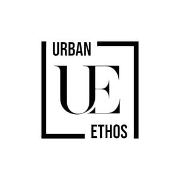

Trade Mark Journal No.2025/029 18 July 2025
UK00004232146 10 July 2025 (18,20,21,24,27)

- Class 18
- Bags; Tote bags; Luggage bags; Duffle bags; Duffel bags; Carry-on bags; Toiletry bags; Bags for clothes; Drawstring bags; Carry-all bags; Belt bags and hip bags; Nose bags [feed bags]; Bags (Nose -) [feed bags]; Carrying bags; Grocery tote bags; Cross-body bags; Bags for umbrellas; Diaper bags; Luggage, bags, wallets and other carriers; Crossbody bags; Cloth bags; Bucket bags; Leather bags; Sling bags; Nappy bags; Canvas bags; Shoe bags; Belt bags; Clutch bags; Duffel bags for travel; Wheeled bags; Kit bags; Travel bags; Bags for travel; Messenger bags; Souvenir bags; Garment bags; Leather bags and wallets; Shoulder bags; Toilet bags; Make-up bags; Waterproof bags; Cosmetic bags; Makeup bags; Reusable shopping bags; Umbrella bags; Camping bags; Towelling bags; Courier bags; Bags for campers; Roll bags; Bags for carrying pets; Knitted bags; Bags [envelopes, pouches] of leather, for packaging; Bags [envelopes, pouches] for packaging of leather; Gym bags; Bags [envelopes, pouches] of leather for packaging; Hand bags; Cabin bags; Travelling bags; Attaché bags; Flight bags; Traveling bags; Overnight bags; Beach bags; Bags for climbers; Boot bags; Mesh shopping bags; Mesh bags for shopping; Leather shopping bags; Canvas shopping bags; Knitting bags; Hiking bags; Bum bags; Frames for bags [structural parts of bags]; Wash bags for carrying toiletries; Roller bags; Suit bags; Nose bags; Hunting bags; Baby carrying bags; Gladstone bags; Feed bags; Waist bags; Sling bags for carrying infants; Bags for carrying animals; Trunks and traveling bags; Trunks and travelling bags; Garment bags for travel; Bags (Garment -) for travel; Wheeled shopping bags; Evening bags; Travelling bags [leatherware]; Shoe bags for travel; Changing bags; Work bags; Toiletry bags sold empty; Airline travel bags; Travel luggage; Travel baggage; Travel bags made of plastic materials; Garment bags for travel made of leather; Travelling bags made of leather; Hat boxes for travel; Two-wheeled shopping bags; Sports bags; Bags for sports; Textile shopping bags; Book bags; Carry-on suitcases; Travel cases; Diplomatic bags; Bags for sports clothing; Sport bags; Hiking rucksacks; Hiking poles; Hiking sticks; Rucksacks; Backpacks [rucksacks]; Rucksacks for mountaineers; Small rucksacks; Backpacks; Holdalls; Handbag straps; Straps for suitcases; Straps for luggage; Luggage straps; Rucksacks on castors; Leather luggage straps; All-purpose carrying bags; Wrist mounted carryall bags; Schoolbags; Lockable luggage straps; Daypacks; Backpacks for carrying babies; Leather suitcases; Knapsacks; Backpacks for carrying infants; Trolley duffels; Sling bags for carrying babies; Baby backpacks; Suitcases; Haversacks; Luggage; Small backpacks; Wheeled luggage; Wheeled suitcases; Trunks [luggage]; Luggage trunks; Trunks being luggage; Suitcase handles; Handles (Suitcase -); Trunks and suitcases; Bumbags; Satchels; Holdalls for sports clothing; Drawstring pouches; Tool bags of leather, empty.
- Class 20
- Racks; Wine racks; Food racks; Furniture racks; Racks [furniture]; Shoe racks; Wine racks [furniture]; Racks [furniture] for casks; Bottle racks; Rack bars [furniture]; Storage racks; Coat racks; Tie racks; Bottling racks; Rack bars for shelves [non-metallic]; Coat racks [furniture]; Plant racks; Clothes racks [furniture]; Fodder racks; Plate racks [furniture]; Hanging storage racks [furniture]; Luggage racks being furniture; Saddle racks; Hat racks [furniture]; Wooden racks [furniture]; Kimono racks; Storage racks for firewood; Key racks [furniture]; Display racks; Racks being furniture of metal; Gun racks; Non-metallic storage racks [furniture]; Non-metallic racks [furniture] for use in storage; Paper racks [furniture]; Paper racks; Freestanding towel racks; Magazine racks; Desk racks [furniture]; Racks for storing cardboard; Wall-mounted gun racks; Wall-mounted tool racks; Plastic racks for tools; Letter racks [furniture]; Surfboard display racks; Mobile storage racks [furniture]; Metal hat racks; Relocatable metal storage racks [furniture]; Wall-mounted non-metal tool racks; Relocatable non-metallic storage racks [furniture]; Hat racks [hooks] not of metal; Dispensers (Fixed -) for towels; Hooks for towels (Non-metallic -); Closets (Towel -) [furniture]; Towel closets [furniture]; Boxes, not of metal, for dispensing paper towels; Bath pillows; Bedding for cots [other than bed linen]; Bedding, except linen; Towel dispensers, not of metal; Furniture for shops; Shop furniture; Pouffes [furniture]; Stationery cabinets [furniture]; Furniture and furnishings; Cupboards being furniture; Kitchen furniture; Consignment shelving [furniture]; Shelves being nursery furniture; Furniture; Nursery furniture; Cushions [furniture]; Units [furniture] for the display of stationery; Kitchen dressers [furniture]; Garden furniture; Furniture shelves; Shelves [furniture]; Furniture for kitchens; Furniture for displaying goods; Canteen furniture; Trolleys [furniture]; Metal furniture and furniture for camping; Furniture for caravans; Bamboo furniture; Shop furniture for use in displaying cards; Potato bins [furniture]; Stackable furniture; Shelves in the nature of furniture; Arbours [furniture]; Upholstered furniture; Dressers [furniture]; Wooden furniture; Credenzas [furniture]; Furniture cabinets; Cabinets [furniture]; Patio furniture; Recliners [furniture]; Bentwood furniture; Washstands [furniture]; Bedroom furniture; Outdoor furniture; Drawers for furniture; Benches [furniture]; Household furniture; Bathroom furniture; Lawn furniture; Desks [furniture]; Panelling for furniture; Wooden shelving [furniture]; Leather furniture; Slatted furniture; Chairs being office furniture; Tables [furniture]; Seating furniture; Furniture moldings; Office furniture; Furniture (Office -); Indoor furniture; Furniture for bathrooms; Furniture for storage; Storage furniture; Lounge furniture; Furniture of metal; Metal furniture; Furniture parts; Furniture partitions; Furniture frames; Furniture chests; Pet furniture; Lockers [furniture]; Pedestals [furniture]; Furniture for vivariums; Furniture partitions of wood; Furniture (Partitions of wood for -); Partitions of wood for furniture; Consoles [furniture]; Furniture for offices; Antique style furniture; Furniture for conservatories; Doors for furniture; Furniture doors; Transformable furniture; Mirrors [furniture]; Furniture for washrooms; Trestles [furniture]; Glass furniture; Metal cabinets [furniture]; Inflatable furniture; Furniture (Inflatable -); Garden furniture manufactured from wood; Fireguards [furniture]; Seats [furniture]; Furniture for children; Joints for furniture; Metal shelving [furniture]; Modular bathroom furniture; Computer furniture; Furniture for saunas; Legs for furniture; Drawers [furniture parts]; Drawers as furniture parts; Furniture for camping; Camping furniture; Screens [furniture]; Furniture screens; Cane furniture; Domestic furniture; Metal office furniture; Countertops [furniture parts]; Furniture for babies; Kitchen cupboards; Kitchen cabinets; Kitchen dressers; Kitchen tables; Fitted kitchen furniture; Kitchen units; Bathroom cupboards; Bathroom cabinets; Wooden containers [other than for household or kitchen use]; Containers made of wood [other than for household or kitchen use]; Non-metallic containers [other than for household or kitchen use]; Cupboards for bedrooms; Kitchen display units; Height adjustable kitchen furniture; Non-metallic drums [other than for household or kitchen use]; Shelves for storage; Cabinets for storage purposes; Storage units [furniture]; Storage drawers [furniture]; Storage modules [furniture]; Storage cabinets [furniture]; Storage shelves [furniture]; Drawer storage for cards; Storage cupboards [furniture]; Metal storage cabinets; Storage boxes [furniture]; Storage baskets [furniture]; Storage racks for storing works of art; Wood storage tanks; Storage units for cupboard conversions; Plastic storage tanks; Sleeping bag pads; Sleeping mats; Sleeping mats for camping [mattresses]; Sleeping pads; Bean bag pillows; Bean bag beds; Bean bags; Children's mats used for sleeping; Wooden storage boxes; Boxes for storage purposes [plastic]; Boxes for storage purposes [wood]; Storage boxes for pillows [furniture]; Wooden boxes for storing toys; Locker boxes [furniture]; Portable boxes [containers] of wood; Portable boxes [containers] of plastic; Plastic boxes for packing; Storage bins, not of metal; Ice storage shelves [furniture]; Stacking boxes of plastic; Wooden chests for the storage of toys; Plastic boxes; Containers, not of metal, for storage; Boxes for stacking purposes [plastic]; Tool storage containers (non-metallic -) [empty]; Nesting boxes; Boxes (Nesting -); Box shelves; Pedestal storage units [furniture]; Storage cases [furniture]; Wooden boxes; Tool boxes [furniture]; Containers, not of metal [storage, transport]; Containers, not of metal, for storage or transport; Sleeping mats of bamboo or straw; Nap mats [cushions or mattresses]; Mats for infant playpens; Infant playpens (Mats for -); Playpens (Mats for infant -); Bumper guards for cots, other than bed linen; Reusable baby changing mats; Foam camping mattresses; Bed mattresses; Beds, bedding, mattresses, pillows and cushions; Bedding for nursery cots [other than bed linen]; Dish cabinets; Toilet cabinets; Combined lids for containers [non-metallic and not for household or kitchen use]; Combined containers [non-metallic and not for household or kitchen use]; Sink liners; Counter tops for use with sinks; Storage racks to hold vehicle mats; Mats, removable, for sinks; Basin cabinets; Coat pegs [wall mounted hooks] non-metallic; Pedestal cabinets; Removable covers for sinks; Towel dispensers, not of metal, fixed; Dispensers (Towel -), not of metal, fixed; Towel dispensers, fixed, not of metal; Plastic garden furniture; Furniture for house, office and garden; Plastic furniture for gardens; Tables for use in gardens; Non-metal garden stakes; Garden furniture made of metal; Garden furniture made of aluminium; Kneeling pads for garden use; Hand-operated non-metal garden hose reels; Camping mattresses; Camping tables; Inflatable mattresses for use when camping; Air mattresses for use when camping; Furniture for campers; Camp beds; Picnic units [furniture]; Travel cots; Picnic benches; Bumper guards for cribs, other than bed linen; Fishing chairs; Chairs; Dining chairs; Recliners [chairs]; Shower chairs; Bed chairs; Chairs [seats]; Folding chairs; Inflatable chairs; Reclining chairs; Lounge chairs; Roofed wicker beach chairs; Rocking chairs; Deck chairs; Banqueting chairs; Swivel chairs; Convertible chairs; Picnic tables; Chair beds; Pedestal chairs; Wagons (Dinner -) [furniture]; Drafting chairs; Dinner wagons [furniture]; Conference chairs; Chair cushions; Office chairs; Portable back support for use with chairs; Arm chairs; Drawing chairs; Bean bag chairs; Work chairs; Barbers' chairs; Contour chairs; Low armless fireside chairs; Vice benches [furniture]; Furniture for sitting; High chairs; Ergonomic chairs for seated massage; Babies' chairs; Portable folding stadium seats; Easy chairs; Chairs with castor wheels; Reading easels [furniture]; Lounge chairs for cosmetic treatments; High chairs for babies; Fishing stools; Hairdressers' chairs; Saw benches [furniture]; Beach beds; Saw benches being furniture; Hairdresser's chairs; High seats [furniture]; Couches; Mobile stools [furniture]; Chair pads; Containers (non-metallic -) for storage purposes [other than household or kitchen use]; Divans incorporating storage space; Bathroom vanities [furniture]; Bathroom vanities; Bathroom stools; Bathroom vanity units incorporating basins; Bathroom mirrors; Bathroom fittings in the nature of furniture; Chair legs; Swivel stands [furniture]; Pillows; Latex pillows; Scented pillows; Bamboo pillows; Clothes hangers, clothes stands [furniture] and clothes hooks; Mattresses; Stuffed pillows; Clothes hangers and clothes hooks; Toy boxes [furniture]; Decorative plastic boxes; Layette boxes [of wood or plastic]; Plastic inserts [trays] for tool boxes; Boxes of wood; Wood boxes; Boxes of wood or plastic; Toy boxes [chests]; Toy boxes and chests; Letter boxes of plastic; Stacking boxes of wood; Decorative wood boxes; Stacking trays of plastic for the packaging of eggs; Plastic trays [containers] used in food packaging; Boxes made of plastic; Boxes for stacking purposes [wood]; Wooden boxes for industrial packaging purposes; Container closures of plastic; Packaging containers of plastic; Containers of plastic (Packaging -); Plastic medication containers; Egg containers [packaging] of plastic; Transport containers (Non-metallic -); Plastic inserts for use as container liners; Wooden lids for industrial packaging containers; Corks for containers; Capsules [non-metallic containers]; Containers (Non-metallic -) adapted for packaging beer; Containers (Non-metallic -) in the form of bins; Carrying containers (Non-metallic -); Closures for containers; Water storage tanks (Non-metallic -) [containers]; Packing containers of plastic material; Packaging containers not of metal; Plastic stoppers for industrial packaging containers; Industrial packaging containers of bamboo; Wooden stoppers for industrial packaging containers; Plastic medication containers for commercial use; Flexible containers of plastics for the storage of liquids; Containers (Non-metallic -) in the form of kegs; Frames (Non-metallic -) for containers.
- Class 21
- Spice racks; Spice jars; Vegetable racks; Spice sets; Dish drying racks; Spice shakers; Toast racks; Towel racks; Soap racks; Racks for cosmetics; Racks for drying clothes; Drying racks for clothes; Clothes drying racks; Clothes racks, for drying; Shampoo racks; Oven to table racks; Racks for airing clothes; Mug racks; Kitchen paper racks; Wall-mounted drying racks for laundry; Laundry drying racks; Drying racks for laundry; Pot lid racks; Spice grinders (Non-electric -); Cooling racks for baked goods; Hand-operated spice mills; Shakers for spices; Clothes drying racks [not heated]; Hand soap racks; Racks for body cleansers; Plastic bath racks [caddies]; Drying racks for washing; Height adjustable ceiling-mounted drying racks for laundry; Shower gel racks; Dispensers for paper towels; Holders for towels; Dispensers for paper hand towels; Towel baskets; Rings for towels [bathroom fittings]; Paper towel dispensers; Rails and rings for towels; Rings (Rails and -) for towels; Paper hand towel dispensers; Towel holders; Towel bars; Towel rings; Towel rails; Ironing cloths; Dishcloths for washing dishes; Toilet and bathroom cleaning utensils ; Tableware; Crockery; Coffee services [tableware]; Ceramic tableware; Coasters (tableware); Tableware of porcelain; Tableware, cookware and containers; Oven-to-table tableware; Kitchen utensils; Household or kitchen utensils; Kitchen graters; Kitchen jars; Kitchen containers; Spatulas [kitchen utensils]; Kitchen mitts; Kitchen sponges; Kitchen sieves; Tenderizers [kitchen utensils]; Kitchen utensils of silicon; Turners (kitchen utensil); Moulds [kitchen utensils]; Molds [kitchen utensils]; Kitchen moulds; Household or kitchen containers; Bread-cases [for kitchen use]; Mixing spoons [kitchen utensils]; Spatulas for kitchen use; Graters for kitchen use; Presses (Garlic -) [kitchen utensils]; Garlic presses [kitchen utensils]; Ceramics for kitchen use; Egg separators [kitchen utensils]; Serving scoops [household or kitchen utensil]; Pestles for kitchen use; Kitchen mixers, non-electric; Defrosting trays for kitchen use; Tortilla presses, non-electric [kitchen utensils]; Containers for household or kitchen use; Turners for kitchen use; Kitchen paper dispensers; Kitchen grinders, non-electric; Aluminium moulds [kitchen utensils]; Scrapers (kitchen implements); Kitchen boards for chopping; Crushers for kitchen use, non-electric; Mortars for kitchen use; Cooking utensils; Spoons (Basting -), for kitchen use; Basting spoons, for kitchen use; Batter dispensers for kitchen use; Funnels for kitchen use; Cooking pots for use in microwave ovens; Chopping boards for kitchen use; Cutting boards for the kitchen; Kitchen cutting boards; Griddles [cooking utensils]; Storage jars; Storage tins; Food storage containers; Baking mats; Sushi rolling mats; Plastic place mats; Place mats of plastic; Vinyl place mats; Drip mats for tea; Pet lick mats; Soup bowls; Salad bowls; Bowls; Bathroom ladles; Glass bowls; Bowls (Glass -); Mixing bowls; Combined lids for kitchen containers; Kitchen paper holders; Glass goldfish bowls; Japanese-style soup bowls [wan]; Fruit bowls of glass; Beaters (Non-electric -) for kitchen use; Shaving bowls; Glass bowls for live goldfish; Serving bowls; Japanese style soup serving bowls (wan); Fruit bowls; Utensil jars; Goldfish bowls; Basting spoons [cooking utensils]; Trivets [table utensils]; Sugar bowls; Pouring spouts for kitchen use; Wooden chopping boards for kitchen use; Basins [bowls]; Bowls [basins]; Toilet paper racks; Fitted racks for wiping, drying, polishing and cleaning paper; Floor wax applicators mountable on a mop handle; Water closet brush holders; Fitted racks for hair fixers; Towel rails and rings; Serviette holders; Toothbrush holders; Cutlery trays; Napkin holders; Tablecloth holders; Table napkin holders; Bathroom glass holder; Holders for toothbrushes; Cutlery rests; Tableware, other than knives, forks and spoons; Bone china tableware [other than cutlery]; Cookware and tableware, except forks, knives and spoons; Tealight holders; Holders for tumblers; Napkin holders of precious metal; Glass holders; Tableware, except forks, knives and spoons; Plastic bag holders for household use; Holders for brushes; Toilet brush holders; Candle holders; Toothpick holders; Insulating sleeve holder for beverage cups; Cup holders; Holders for toilet paper; Toilet paper holders; Holders (Toilet paper -); Soap holders; Napkin holders, not of precious metal; Holders for cosmetics; Brush holders; Bouquet holders; Sponge holders; Toilet tissue holders; Hand soap holders; Glass holders for candles; Cookware, except forks, knives and spoons; Toothpick holders of precious metal; Pot holders; Portable beverage container holders; Plastic juice box holders; Candle jars [holders]; Candle holders of precious metal; Shampoo holders; Holders for shaving brushes; Place card holders; Disposable table plates; Table plates (Disposable -); Plastic egg holders for domestic use; Glass tableware; Graters [household utensils]; Menu card holders; Coasters other than of paper or of table linen; Coasters, not of paper and other than table linen; Glass storage jars; Bathroom pails; Dispensers for the storage of toilet paper [other than fixed]; Bathroom basins [receptacles]; Fruit cups; Cups (Fruit -); Reamers for fruit juice; Fruit muddlers; Flower bowls; Bowls for candy; Bowls for nuts; Bowls for sugar candy; Fish bowls; Clothes brushes; Cloth for washing floors; Washing floors (Cloth for -); Dusting cloths [rags]; Clothes pegs [clothes pins]; Boxes of porcelain; Boxes of china; Boxes of earthenware; Bento boxes; Boxes of ceramics; Enamelled boxes; Boxes for biscuits; Boxes for sweets; Boxes for sweetmeats; Enamel boxes; Boxes of glass; Soap boxes; Boxes (Soap -); Boxes for candies; Picnic boxes; Bread boxes; Candy boxes; Decorative boxes of glass; Pets (Litter boxes [trays] for -); Litter boxes [trays] for pets; Lunch boxes; Boxes of precious metal for sweets; Sandwich boxes; Ceramic coin boxes; Lunch boxes made of plastic; Household containers for storing pet food; Containers for bird food; Heat retaining containers for food; Thermal insulated containers for food or beverage; Plastic containers for dispensing food to pets; Lockable non-metal household containers for food; Thermal insulated containers for food or beverages; Foil food containers; Glass containers; Heat-insulated containers; Toothbrush containers; Glass lids for industrial packaging containers; Soap containers; Industrial packaging containers of glass; Household containers; Containers for ice; Pomanders [containers]; Containers for flowers; Containers for beverages; Lotion containers, empty, for household use; Plastic containers for dispensing drink to pets; Glass flasks [containers]; Containers for cosmetics; Refuse containers; Compost containers for household use; Insulated containers for beverage cans, for domestic use; Plastic bowls [household containers]; Disposable lids for household containers; Containers for household use; Heat-insulated containers for household use; Beverage coolers [containers].
- Class 24
- Sleeping bags; Bags for sleeping bags [specifically adapted]; Mats of linen; Mats [coasters] of textile; Place mats of textile; Textile place mats; Fabric place mats; Dinner mats of textiles; Quilt bedding mats; Cloth for tatami mat edging ribbons; Mats (Drip -) of textile for glasses; Place mats of textile material; Table mats made of textile materials; Table mats, not of paper; Table mats (not of paper); Mats of textile for beer glasses; Place mats, not of paper; Mats (Place -), not of paper; Table place setting mats of textile; Lace table mats not made of paper; Individual place mats made of textile; Textiles; Textiles and substitutes for textiles; Textiles for furnishings; Textile fabrics; Textiles for upholstery; Tablecloths of textiles; Non-woven textiles; Viscose textiles; Polyester textiles; Handkerchiefs of textiles; Tapestries of textile; Textile fabrics for the manufacture of clothing; Textile fabrics for use in manufacture; Textile fabrics for use in the manufacture of furniture; Household textiles; Towels of textiles; Textile fabrics for lingerie; Textile fabrics for use in the manufacture of sportswear; Textile fabrics for use in the manufacture of towels; Non-woven textile fabrics; Textile fabrics for use in the manufacture of bedding; Quilts of textile; Textile fabrics for use in the manufacture of curtains; Textile tablecloths; Tablecloths of textile; Honeycomb materials [textiles]; Textile fabrics for use in the manufacture of pillowcases; Bedroom textile fabrics; Patterned textiles for use in embroidery; Tablemats of textile; Coated textiles; Fabrics being textile piece goods; Furniture coverings of textile; Coverings (Furniture -) of textile; Non-woven textile fabrics for use as interlinings; Fabrics being textile piece goods for use in embroidery; Textiles made of wool; Fabrics being textile piece goods for use in tapestry; Textile fabrics in the piece; Textile fabric; Textiles made of cotton; Textile fabrics for use in the manufacture of beds; Textile fabrics for use in the manufacture of sheets; Textiles made of linen; Doilies of textile; Textile goods for use as bedding; Plastic woven textile materials for use in agriculture; Furnishing fabrics being textile piece goods; Waterproof textile fabrics; Fabrics being textile piece goods for use in manufacture; Fabrics for textile use; Textile fabrics for use in the manufacture of wall coverings; Substitutes for textiles; Handkerchiefs of textile; Textile handkerchiefs; Silk fabrics for furniture; Curtains of textiles or plastic; Reinforced fabrics [textile]; Woollen fabrics; Rubberized textile fabrics; Curtains of textile; Textile fabrics for making into linens; Textile goods, and substitutes for textile goods; Textiles for food wrapping; Textile napkins; Fabrics being textile piece goods for use in patchwork; Towels of textile; Towels [textile]; Towels [of textile]; Suiting materials [textile]; Textile handkerchieves; Textiles for making articles of clothing; Hand-towels made of textile fabrics; Textile fabrics for making into clothing; Curtains made of textile fabrics; Textile fabrics for making up into household textile articles; Woven fabrics for furniture; Materials (Textile -) for use in the manufacture of footwear; Friezes of textile; Apparel fabrics; Fabrics being textile piece goods made of mixtures of fibres; Textile fabric piece goods for use in the manufacture of clothing; Linings [textile]; Napery of textile; Napery [textile]; Serviettes of textile; Towels; Bath towels; Bath sheets (towels); Bathroom towels; Beach towels; Tea towels; Terry towels; Kitchen towels; Kitchen towels of cloth; Dish towels; Glass cloths [towels]; Hooded towels; Hand towels; Turkish towels; Bath wrap towels; Yoga towels; Face towels; Golf towels; Glass-cloth [towels]; Dish towels for drying; Towels [textile] for the beach; Large bath towels; Face towels of textiles; Kitchen towels [textile]; Kitchen towels of textile; Children's towels; Household linen, including face towels; Hand towels of textile; Textile face towels; Face towels of textile; Towels [textile] for kitchen use; Japanese cotton towels (tenugui); Quilts of towel; Towel sheet; Linens; Textile hair drying towels; Turban towels for drying hair; Textile exercise towels; Bedsheets; Bed linen and blankets; Turkish towel; Bath linen; Face cloths of towelling; Towels [textile] for use in connection with toddlers; Towels [textile] for use in connection with babies; Bath sheets; Bed linen of paper; Cloth napkins; Bath linen, except clothing; Bed clothes and blankets; Towels made of textile materials; Face towels [made of textile materials]; Tea cloths; Disposable bedding of paper; Make-up removal towels [textile] other than impregnated with toilet preparations; Paper pillowcases; Cloths; Towelling coverlets; Bed sheets of paper; Linen cloth; Towels of textile sold in pack form; Linen; Kitchen linen; Fabrics for manufacturing garden furniture; Textile piece goods for clothing; Fibre fabrics for use in the manufacture of articles of clothing; Textile piece goods for making bedding covers; Textiles for interior decorating; Textile fabric piece goods for the manufacture of upholstered furniture; Fabrics for the manufacture of furnishings; Textile piece goods for making-up into clothing; Textile piece goods for use in the manufacture of protective clothing; Fibre fabrics for the manufacture of the exterior coverings of furniture; Lingerie fabrics; Textile piece goods for making into clothing; Sleeping bags for camping; Sleeping bags for babies; Sleeping bags [sheeting]; Sleeping bag liners; Bivouac sacks being covers for sleeping bags; Sleeping bag sheet liners; Bed blankets; Blankets (Bed -); Bed pads; Silk bed blankets; Bed coverings; Yoga blankets; Sofa blankets; Ticks (mattress and pillow coverings); Kitchen and table linens; Loose covers for garden furniture; Picnic blankets; Blankets for outdoor use; Travelling blankets; Bed linen and table linen; Linen [fabric]; Bed linen; Linen for the bed; Linen (Bed -); Terry linen; Woven linen fabrics; Table linen of textile; Diapered linen; Linen (Diapered -); Household linen; Linen (Household -); Table linen; Textile napkins [table linen]; Canopies (bed linen); Textile smallwares [table linen]; Infants' bed linen; Bed linen made of non-woven textile material; Valence linen; Tick [linen]; Linen lining fabric for shoes; Fabrics made from linen, other than for insulation; Cot bumpers [bed linen]; Cotton cloths; Coasters [table linen]; Crib bumpers [bed linen]; Table linen, not of paper; Tags of textile for attachment to linen; Labels (Textile -) for marking linen; Silk cloth; Silk [cloth]; Flax cloth; Linen for household purposes; Cotton fabrics; Bed blankets made of cotton; Silk blankets; Woollen fabric; Labels (Textile -) for identifying linen; Cotton fabric; Bedsheets of leather; Silk fabrics; Woollen cloth; Flax fabrics; Woven silk fabrics; Cotton blankets; Household linens; Towelling [textile]; Drink coasters of table linen; Woven fabrics for use in the manufacture of clothing for use in clean rooms; Woolen cloth; Woolen fabric; Denim [cloth]; Damask; Cloth doilies; Fabric bed valances; Cotton knitted fabric; Quilts made of terry cloth; Woollen fabrics for use in the manufacture of trousers; Quilted blankets [bedding]; Cloths of woven textile material for washing the body [other than for medical use]; Shower room curtains; Chair covers; Chair backs [textile articles]; Cot blankets; Seat covers [loose] for furniture; Bed clothes; Bedspreads; Bed sheets of plastic [not being incontinence sheets]; Bed sheets of plastic, not being incontinence sheets; Pillowcases [pillow slips]; Pillowcases; Cot sheets; Comforters (bedding); Valanced bed sheets; Crib sheets; Cloth handkerchiefs; Coverlets [bedspreads]; Curtains and lace curtains of textiles or plastic; Fitted bed sheets; Fabric curtains; Comforters for beds; Hooded blankets; Woollen blankets; Flat bed sheets; Woolen blankets; Bed blankets made of man-made fibres; Fire-retardant textile shower curtains; Shower curtains of textile or plastic; Duvets.
- Class 27
- Mats; Tatami mats; Bathroom mats; Floor mats; Bath mats; Rugs [mats]; Yoga mats; Baby crawling mats; Japanese rice straw mats (tatami mats); Floor mats of rubber; Floor mats for vehicles; Non-slip mats; Non-slip mats for showers; Pet feeding mats; Plastic bath mats; Floor mats for automobiles; Prayer mats; Car mats; Beach mats; Fabric bath mats; Straw mats; Non-slip mats for baths; Puzzle mats [floor coverings]; Rubber bath mats; Personal sitting mats; Textile bath mats; Carpets, rugs and mats; Wrestling mats; Door mats; Paper floor mats; Vehicle mats and carpets; Floor coverings [mats] for use in gymnastic activities; Textile floor mats for use in the home; Rubber mats; Gymnastic mats; Vehicles mats and carpets; Gymnasium mats; Reed mats; Floor mats of cork; Paper bath mats; Door mats of textile; Underlay for mats; Diatomite bath mats; Non-slip floor mats for use under apparatus; Horse stall floor mats; Floor coverings [mats] for use in sporting activities; Play mats; Runners [mats]; Wooden door mats; Goza rush mats; Cork mats; Floor coverings [mats] being sheet materials for use in sporting activities; Chair mats [under-chair floor protector]; Mushiro straw mats; Straw mats [mushiro]; Gymnasium exercise mats; Floor mats, fire-resistant, for fireplaces and barbecues; Door mats of india rubber; Foam mats for use on play area surfaces; Bathroom rugs; Personal exercise mats; Mats of woven rope for ski slopes; Ski slopes (Mats of woven rope for -).
Urban Ethos UK LTD